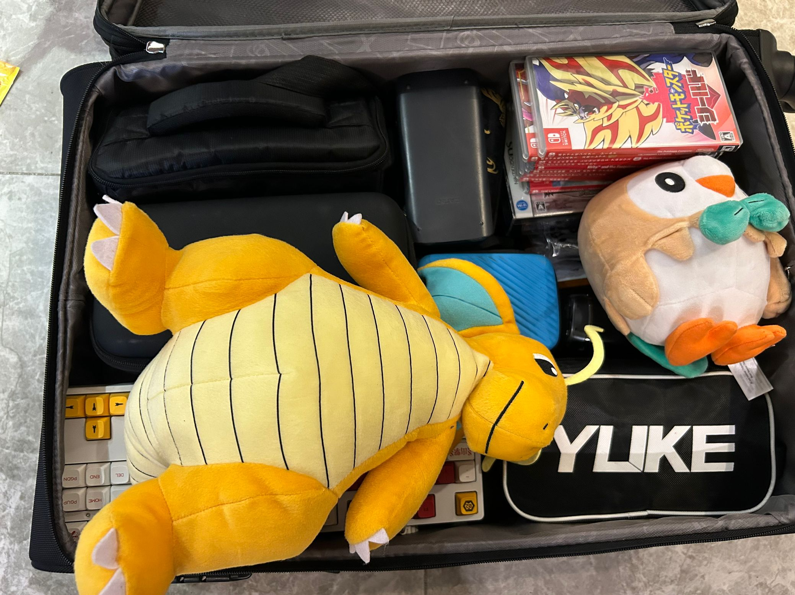

推开窗户，举起望远镜。
眼底映出，一阵浓烟。
前已无通路，后不见归途。
——《十万嬉皮》，万能青年旅店
8 月 21 号匆匆忙忙坐上了前往北京丰台的 D60 卧铺班车，选了我最喜欢的卧铺上铺。为防止在车上的 16 个小时卧铺之旅无聊，特地挑了部之前一直没看的《流浪地球 2》来消磨时间。原以为睡眠要成为问题，但在绿皮车的晃荡之中却不经意间已然来到了北京。我很喜欢在车站拖着行李箱出站的感觉，因为你会经历一个从车站这种闭塞的空间一下走到一个新城市的广阔外景之中，颇有一种”地图加载中“之感，类比的话，大概就是《塞尔达传说：旷野之息》从初始洞窟出来走一小段路，到眺望整个海拉鲁，进最经典标题画面的感觉。
北京对我来说，确实像刚捧起旷野之息那一阵的海拉鲁。入学第一个月，似乎每天都能有新鲜感。虽然从火车站到学校近乎 1 小时的通勤给了我不太好的第一印象，但是有闵行这位大仙在前，因此地铁不需要转线 + 一小段打车就可以到宿舍楼下的方案，似乎也变得可以接受了不少。其实路上劳累与否，还需要控制一个变量：就是自己的行李重量。我自认为我的行李是比较标准的出远门定居的组合，两个行李箱加一个背包。思考再三，还是带上了我的宝可梦们，似乎更能增添一份旅行的感觉。
当然，还有一些 NS 卡带
甲醛
住新修的宿舍，是一件既幸运又倒霉的事情。幸运的是可以享受到全新的家具与基建设施，而反面上最大的问题就是甲醛了。更倒霉的是，我从本科到研究生居然经历了两次需要处理甲醛的情况，而且碰巧的是这两栋宿舍楼栋的楼号都是质数（交大的东19号楼，清华的紫荆公寓17号楼）。在与舍友简单商量一下后，决定买个一次性的甲醛测试剂来试试深浅，奈何对着比色卡看了半天也不是很确定浓度（天生不是生化实验的料了）。在借用了强大的 Photoshop 后，大概可以放心入住了。
这时一个朋友提出了一个非常天才（？）的想法，那就是在食堂这种开放场地测试一次，这种高度通风的场地可以近似认为是 0 甲醛的，以此来作为空白对照。于是我真的在吃饭时带上了一盒，并且吃之前按照说明开了放在餐桌上，等待指定时间后再进行后续步骤。结果好笑的就是，和同学聊着天一会儿不注意，再看时居然没了，这才想起刚刚有个阿姨过来在桌上抹了一遍。事后紧张地查了下该试剂的成分，以免创下刚来学校就毒死一食堂人的壮举。
由于还是无法准确测定浓度，后续我又下单了一台米家空气净化器，和本科时候用的是同款。到笔者写作的日子，甲醛的浓度大约已经可以忽略不计了。至此这一章便告一段落。
提车
当然说的是自行车。
清华有个特点，就是共享单车难找。本科在交大上学时，由于和哈啰有合作，校园里只有清一色的蓝车，并且有专人负责投放和管理。因此本科第一学期买的永久还是凤凰自行车在我骑了三个月后，就直接被更为方便的哈啰年卡取代了。可夏令营在清华住了两天后，我立刻意识到以后来上学一定要买车。一是这里什么牌子的车都有，你开了一家的年卡，意味着如果需要最大化效用，你必须要骑这家的车——在这里是没有这种好事的；二是车的数量实在不多，并且作为网红学校，游客进来更是影响了单车的分布；三是学校修了很多自行车道，更适合公路车这种能够变速、速度上限更高的车骑行，鉴于我的通勤需要几乎纵穿整个校区，因此通勤效率的考量还是必要的。
在同学的引荐下，来到了六道口的喜德盛，提了我人生的第一辆公路车（没错，在此之前我甚至不知道公路车和山地车的区别）。在经过了一段时间的磨合后，目前对该坐骑的表现还是十分满意的。
这里再提一下，北京是一个非常适合骑行的城市，这里的自行车道普遍很宽，有的地方甚至能达到两个四轮小车车位的宽度。虽然有一个问题是有时一些四轮车会拐进自行车道来开，严重影响骑行体验，我也不知道这算不算违反交规。
在第一周周末，我也和同学完成了在这辆公路车上的第一次长距离骑行，全程 45 公里，路线是沿着清河一路骑到温榆河公园。在此之前，我的一次比较印象深刻的骑行还是和女朋友用共享单车从闵行交大骑到徐汇交大。整个骑行过程均速大概在 20 多 km/h，对体力的消耗尚能接受，似乎还没到极点。
宿舍
也许这一章本来应该加上”装机“。我早在去年年底就一直和同学叨叨，说到了研究生一定要装一台 4090 主机，打了这么久仗还不能享受享受了。结果过了没多久 4090 成功对大陆禁售。当然马后炮来看，即使没这回事我也不太可能买 90，一是爆的金币还是太多，二是宿舍单个电器限功率 1000W。在这之后，我一路看着配置，从 4090D 的发售看到了 Intel 缩缸，AMD 涨价，再到了开学，突然意识到 50 系列似乎快要来了。于是暂时搁置之。
虽然装机告吹了，但是屏幕还是要买的。本科用了四年 24寸 1080P 60Hz，现在回忆起来好像也是用得绘声绘色。到了研究生，决心犒劳自己一下，一咬牙入了 27 寸 4K160Hz，并且还带 MiniLED 1000 nits 的泰坦军团 P275MV，听说开 HDR 会特别爽。送的 DP 线看了一圈，似乎没有能插的设备，于是被我随手丢到了盘丝洞一样的线材收集箱里。经过一段时间的调整，目前接了两条 HDMI 线，分别连接 Switch 和 Windows 笔记本；以及一条 Type C 的 DP 协议线，支持反向充电，用于连接书包里的 Macbook Pro。
除了刚刚的空气净化器外，还购入了一件”覆盖宿舍“的物件，那就是路由器。清华的校园网情况比较复杂，简单来说校内覆盖了一个名叫 Tsinghua-Secure 的网络，同时宿舍提供了网口，通过网口连接的网络名叫 Tsinghua-IPv4，这个网络相比 Secure 要麻烦一点，因为得定时验证，这里就不细说了。但是经过本人测速，网口接出来的网络能够跑到千兆，而 Secure 只能最多到百兆，于是毅然决然把网口的网牵了条网线到路由器上。
布置宿舍花了不少时间，实在是因为这里的各种规格过于诡异，比如床帘的高度高达 1.7m 等，幸好京东快递的售后退换还是不错的。做卫生也花费了一些时间。目前安顿下来，对自己宿舍的工位还是非常满意的，130cm 的桌子宽度配上 27 寸屏幕，上方的柜子放置了一些行李里带上的手办与游戏卡带，23 度的空调，以及 10cm 高的床垫。嗯，很惬意的搭配。
实验室
叉院的工位统一在 FIT 楼 6 楼，距离紫荆学生公寓区足足有 1.6 公里，虽然路线是非常简单的，只要沿着南北方向的路（新民路，学堂路，etc）一口气开到底，然后东西调整一下便可，但是绝对的距离还是增加了通勤成本。除了到 FIT 楼需要花的时间，进了楼栋还需要思考如何快速抵达 6 楼。在绕了几圈之后，目前发现最快的方式还是进门左手边的电梯。FIT 楼有一个非常诡异的事情，那就是作为一个”凹“字形的楼，两边是不对称的，一边 5 楼、一边 6 楼，这一度让我在看到某一边的电梯只有 5 楼后，难以置信地琢磨了下自己是不是穿越了。
工位上接替了之前的一个硕士学长的位置，刚好他的研究方向也是和我非常像的，以至于把老板开玩笑说以后”我就可以代替他了“理解成了物理上的”代替他的位置“。我们这届毕业的人数大于新生人数，因此我可以从毕业学长的工位处薅到大于人均的物品资源，尤其是屏幕，我成功毛到一台 AOC 的 27 寸 4K，以及戴尔的 24 寸 4K 可旋转屏幕，那就想都不用想了，直接双屏组起！组双屏这件事还花了我一番功夫。一开始我不知道正常苹果的一个 C 口无法输出两种不同的信号（即你用一个拓展坞连接一个 C 口，然后将两个 HDMI 插在这个拓展坞，这两个 HDMI 只能输出完全相同的镜像内容），因此匆匆买回的拓展坞被我又退回了。稍加了解，才知道这件事在苹果上也是 non-trivial 的（苹果真的很多这样的破事…），于是换了个支持双屏异显的拓展坞。鼠标和键盘也是找老板报销了，换了套比较舒适的办公向的配置。
此外，我们这个 FIT 6楼的位置去开组会也是比较尴尬，前面说过这个楼是一个凹字形，于是就被分为了若干区域（例如 1-6xxx 是在凹的左边，2-6xxx 可能是在中间这块区域，注意这两个都是在 6 楼）。而我们从工位去组会，需要完成从 4-6xx 到 3-2xx，不仅需要经历一段纵向的电梯，还需要横向绕一圈过去。
在算力方面，其实一开始我是比较悲观的，因为作为之前主要搞传统体系结构的组，没有高性能的 GPU 集群也比较合理。我们组里的服务器都是用茶的名字命名的，我之前常用的 GPU 服务器叫 ”龙井“，本体是 4 卡 3090，其实在几年前已经算是不错的配置了，但是奈何抗不过摩尔定律。不过好消息是叉院这边可以用期智研究院的算力，这样的话还是能用到不少 A100 的，最近我也是摸索了它的管理平台的一些使用注意事项，算是把坑踩完了。
食堂
清华的食堂给我的印象非常之好。首先，在之前的夏令营文章中可能提过，我对紫荆食堂的好评。在来了这边快一个月之后，我仍然维持这个好评。我满意的点有这么两个：
- 食堂的平均素质非常高。这其实很重要，对于交大，我的印象就是：方差很大，要说好吃，当然可以拿出那么几道不错的菜和窗口；但是如果 4/5 都是难吃的窗口，并且这些窗口离宿舍还比好吃的要更近，那么食堂就对我慢慢没有吸引力了。而清华的食堂综合表现是非常不错的。我来的这些天吃饭的选择应该算是比较多样的，除了特别爱吃的菜，也在下意识避免重复吃相同窗口。在这样的采样下，目前最一般的窗口应该是桃李福州窗口的鱼丸，难吃程度大概就是超市里的冷冻鱼丸拿出来煮的鱼丸汤——可以看出这个下限已经很高了。至于海南鸡饭、炒面、东南亚窗口等等实力非常在线的窗口，就不用说了。综合素质高的好处在于，可以让我的选择很多，因此不会出现吃腻的情况。其实对于一个人而言，并不是要无限的花样才能确保不吃腻。我觉得一般对大部分人，能做到一天能换个花样，然后七天循环回来，就已经很难腻味了。
- 离宿舍近，这边特别指最好吃的食堂离宿舍最近，也即拥有 4 楼的紫荆食堂，是穿着拖鞋可以步行过去的距离。距离远的食堂会客观上削减我主动过去的积极性。这是我本科的心得体会。
- 最晚能开到 23 点。这边特别指桃李园。这意味着我可以在很晚的时候吃上饭，或者在这里吃夜宵。对于一个有时候不太规律的人而言，如果没有这种食堂，我唯一的选择可能只能是外卖了。况且桃李的素质也非常可以，同时性价比高。
当然我也才来一个月，现在的好评可能还需要时间沉淀才更加准确。但从身边的统计学来说，大概可以认为清华食堂是不错的。今天又听说清华校内要开一家麦麦了，虽然 10 月底才建成，但已经足够让人充满期待了。
尾记
前些日子在填写新生信息卡的时候，舍友不经意间发出感叹，说我辗转了很多地方。其实我去的地方根本不算多，只是家乡、本科、研究生三个不同的地方罢了，但相比于他这个土生土长的北京爷，确实也是有点颠颇。来到一个陌生的地方的头一个月，无论如何都会是一段独特的体验，会经历各种小插曲，各种值得吐槽的，和自己经验或相违背、或又难得一致的点。来到北京这个首都城市，虽然是孤身一人，但却很难说泛起什么孤独漂泊之感，也许对曾经的北漂是有的吧。
选择现在这个组，自己也并没有后悔，虽然组比较小，自己也是组里做这个方向，i.e. 机器学习系统，的最高年级学生了（也许这一点带给我的孤独飘零之感要比来到北京还要高lol），但老板很 nice，师兄师姐也都非常容易相处。我更喜欢自己一个人在无人的角落闷头钻研的感觉，在那种实力非常强的大组可能反而会懵住（例如之前在 tvm 里）——虽然这样似乎在如今倡导合作的科研环境并不好生存。
我还是一个比较推崇实干的人，以至于更倾向自己先弄出点成果，再去带着这些资历寻求别人合作。我解决了自己曾经的迷茫，即是否研究机器学习系统（GPT 的出现很大程度让我确信，这部分的研究是有价值的），但是不可避免地，又有新的想法困扰着我。留在国内读博，是否是个不好的决定？在这样的小组，我能否自己杀出一片天地？总之，我希望自己在这样一个老板 nice、允许我自由探索的组里，通过白手起家、自己拼杀摸索、最后取得的博士学位，能够让我获得更完整的研究能力吧。这也许是我不想去那种更偏向老板和师兄给我”喂饭“的地方的原因。
和人的交流接触也变得比较频繁了，一直尝试维持一个尽量得体的社交态度。虽然有时候也不一定认可对方的观点，但在不必要的时候也没必要深究。很多人不懂得这个道理，这就是互联网变成这样的主要原因。
噢，互联网，提到这个，这确实也是一个我非常痛恨的东西。我曾经在之前的 2023 年度总结中提到过持续困扰我半年的内耗，现在我认为一个很大的原因就是自己接触的媒介所致。我喜欢花很多时间在网络上浏览，搜寻各种各样的信息，也免不了接受来自各种人的各种信息，而如果这其中有百分之三十的人在释放负能量，那么我其实就在接受整个互联网规模乘以 0.3 的负能量。去年的我，因为意识到负能量给我带来的坏处，普遍对喜欢传播负能量的人都不抱有太好的脸色。而今年我意识到这是互联网本身的问题，而非具体的人的问题。之前有个同学说他觉得周围人生活丰富，我和他说过，这是因为你面对的是你的微信朋友圈，即相当于用你的生活与 N-1 个人的生活去对抗——其实也是一个道理了。逃避互联网也不是一个太好的解决方案，因为长时间不接触新信息会让我的认知和世界产生差距，而如果对信息有选择性地接受很可能又会形成茧房。现在一个折中的方案是降低浏览的时间，似乎一定程度上能缓解这种问题。
来了这边这么长时间了，一直说着要在暑假就想出一个能开始做的课题，但却一路摸鱼，到了报到的日子不得不从家里摆烂舒适的环境被提溜到学校里。前前后后配环境、安装工位，加上一直在试图把这篇博客写完，这一切成功耗掉了我的前两周。虽然也整理并探索了几个方向，但是看了下对应的最新 SOTA，好像又有点灰心丧气了。前方的路到底在哪呢？也许开荒后，便是眼前充满着尘土与浓烟。
一时半会儿也想不明白，先写到这里吧。现在是 9 月，那么关于现在我的一些断言的验证与之后近况的更新，就在 2024 年的年度总结中见吧。晚安。